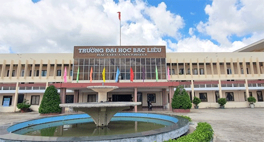

Tên tiếng Anh: BAC LIEU UNIVERSITY
Tên viết tắt: Tiếng Việt ĐHBL - Tiếng Anh BLU
Trường ĐHBL là trường đại học công lập, là cơ sở giáo dục đa ngành,đa hệ được thành lập theo Quyết định số 1558/QĐ-TTg ngày 24/11/2006 của Thủ tướng Chính phủ. Việc thành lập trường ĐHBL là phù hợp theo ý chí, nguyện vọng của đảng bộ và nhân dân tỉnh bạc liêu, đáp ứng yêu cầu đào tạo và phát triển nguồn nhân lực chất lượng cao, phục vụ sự nghiệp công nghiệp hoá, hiện đại hoá của Bạc Liêu và vùng Bán đảo Cà Mau.

II. CHỨC NĂNG NHIỆM VỤ
Về đào tạo: Tổ chức đào tạo đa dạng các cấp trình độ từ cao đẳng, đại học đến sau đại học và tổ chức các loại hình liên thông, vừa học vừa làm, liên kết,...v.v.Nhằm đáp ứng nhu cầu đào tạo ngày càng cao và đa dạng của xã hội, đặc biệt là nguồn nhân lực có chất lượng cao phục vụ phát triển kinh tế, xã hội của vùng bán đảo cà mau và khu vực đồng bằng sông cửu long
Về khoa học công nghệ: Tổ chức nghiên cứu khoa học định hướng ứng dụng chú trọng giải quyết các vấn đề cấp bách và lâu dài trong phát triển kinh tế xã hội của địa phương và vùng tập trung nghiên cứu và chuyển giao công nghệ ưu tiên giải quyết các vấn đề được xã họi đặc biệt quan tâm và thực hiên các dịch vụ khoa học phục vụ cộng đồng